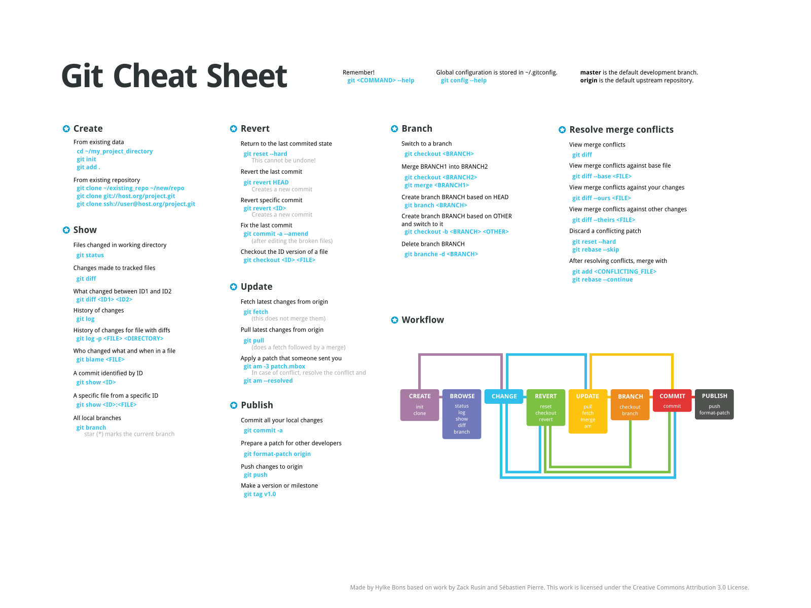
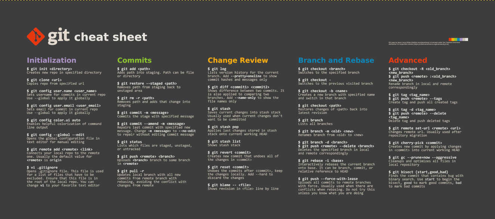

git status
git add .
git commit
git push
git clone
git pull
git config --list --show-origin
git config --global user.email
git config --global user.name "Your Name"
git set remote -v
git remote -v
Create new branch:
git checkout -b name
Switching between branches
git checkout master
git pull upstream master
git push
git submodule deinit -f .
git stash